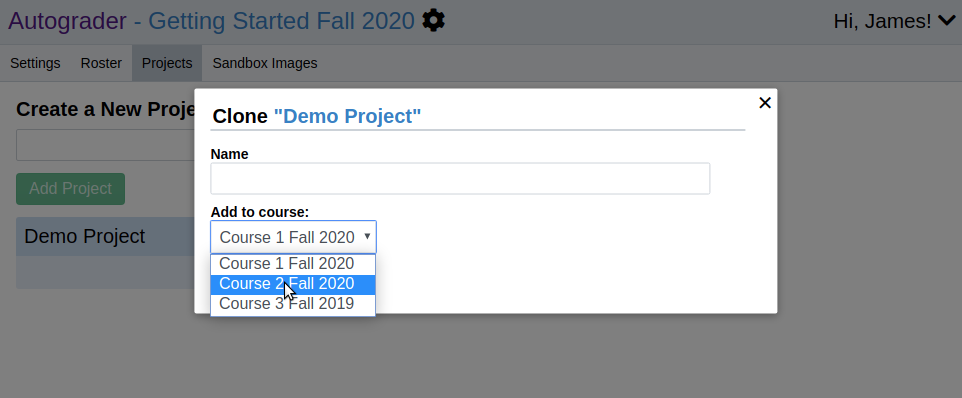
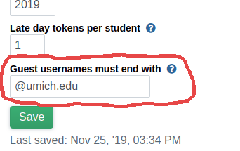
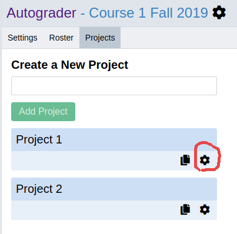
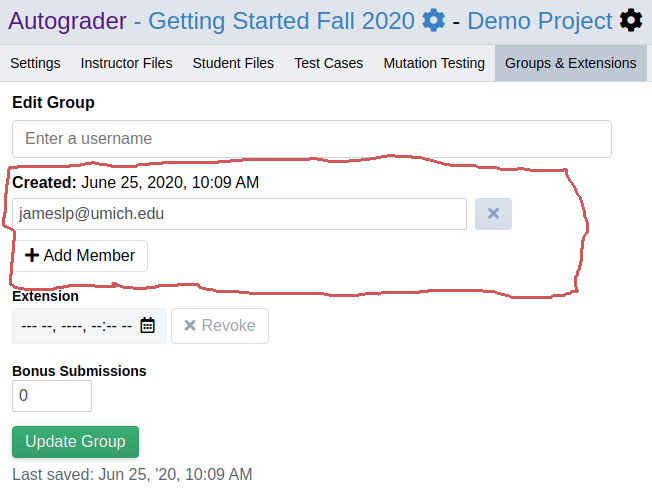
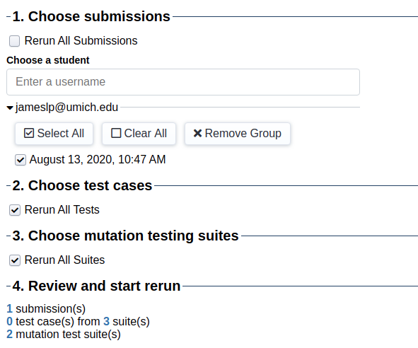

How-tos and FAQ¶
This page will be updated as needed. Contributions are welcome through pull requests to our GitHub repository.
Clone a Course or Project for a New Term¶
To clone a course, see Copying a Course from a Previous Term.
To clone a project, navigate to the course admin page and click on the “Projects” tab. Click the “copy” icon for the project you want to clone.

Choose a new name for the project if you want the new project to be created in the current course. Alternatively, you can choose to have the new project be created under another course that you are an administrator for.
Let students submit even if they’re not in the roster¶
By default, students must be explicitly listed in the student roster in order to submit and form groups. There are two quick steps to changing this behavior:
1. Restrict guests to your email domain (Optional, once per course)¶
Guests are users who are allowed to submit an assignment but are not in the roster for the course. If your institution has a specific email domain (e.g. @umich.edu) we recommend setting the “Guest usernames must end with” field to that email domain. Doing so will make it so that only guests with an @umich.edu (in this example) username can submit.
First, navigate to the admin page for your course.

Then set the “Guest usernames must end with” field to your institution’s email domain.
2. Enable the “Anyone with the link can submit” project option¶
Navigate to the admin page for your project by clicking the gear icon next to the project name.
Then, select the “Anyone with the link can submit” option.

Then, share the project URL with your students. The link will be of the form
autograder.io/web/project/<id>.
Grant an extension¶
To grant an extension, navigate to the project admin page, and select the “Groups & Extensions” tab. Select a group from the “Edit Group” dropdown, set their extension as desired, and click the “Update Group” button.

Edit group members¶
Navigate to the project admin page, and select the “Groups & Extensions” tab.
To edit the members of an existing group, select a group from the “Edit Group” dropdown, add, remove, or change members as needed, and click the “Update Group” button.
To create a new group, click the “Create New Group” button in the bottom-right corner of the page and complete the dialogue that appears.
To merge two existing groups, click the “Merge Groups” button in the bottom-right cornen and complete the dialogue that appears.
Rerun a test case or submission¶
IMPORTANT: Rerunning submissions and test cases can cause students scores to change. Before rerunning anything, please download a spreadsheet of grades for all submissions. See Downloading Grades and Submitted Files for instructions on how to do that.
To rerun any number of submissions and test cases, click on the “Rerun” tab of the project admin page. If you want to rerun specific submissions, select the student/group from the “Choose a student” menu, then select the submission(s) you want to rerun. You may select submissions from as many additional students/groups as you wish.
Next, select which test cases you want to rerun for those submissions you selected. If you only want to rerun a few test cases, then uncheck the “Rerun All Tests” checkbox and select the test cases you want to rerun.

Once you’ve selected the submissions and tests you want to rerun, click the “Rerun” button. The progress of the rerun task will appear below and update automatically.
Rerunning a “stuck” or “errored” submission¶
In some rare cases, a submission may not properly finish being grading. In the case of a service outage, this can result in the submission being marked with “error” status. In even rarer circumstances, a submission may get stuck in the “queued” or “grading” phase and stop making progress.
In either of these circumstances, you can do a full rerun of the submission by selecting the appropriate submission and checking the “Rerun All Tests” and “Rerun All Suites” checkboxes as shown below. When the rerun finishes, the submission’s status will be set to “finished.”
Why do I get “permission denied” when I run my script with ./my_script.sh?¶
File permissions aren’t preserved when files are uploaded. You can run your
script by invoking the appropriate interpreter, e.g. sh my_script.sh or
python3 my_code.py.
Can I use MATLAB?¶
Sort of. Courses using Autograder.io that teach MATLAB typically use the Octave <https://www.gnu.org/software/octave/> interpreter in their autograder sandbox images. MATLAB’s proprietary nature makes it difficult to install under the constraints that Autograder.io puts on sandbox images.